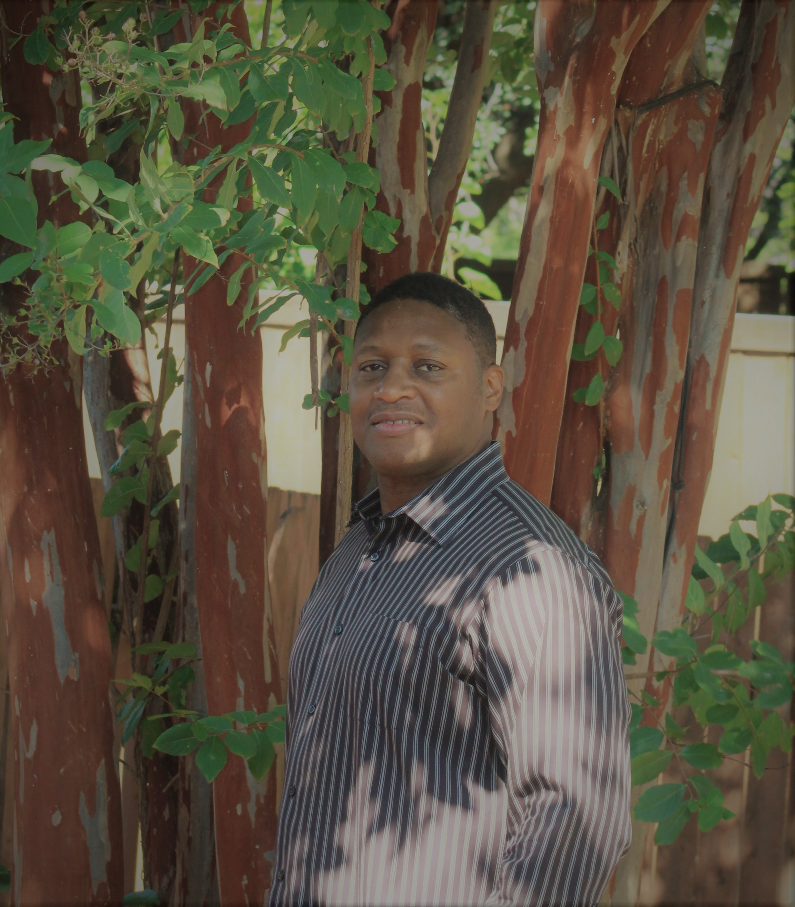

The number of homeless people in Dallas and Collin counties dropped slightly this year, but the number of those people actually living on the streets dramatically increased, according to data released Thursday from the annual homeless census. There were 3,789 homeless people counted this year in Dallas and Collin counties, down from 3,810 last year. Of those people, 1,087 were unsheltered, up from 739 in 2016. The greater number of unsheltered homeless people — those living on the street, under highway overpasses and in parks — was expected because of more thorough counting achieved through an increase in the number of volunteers conducting the census. But the numbers also reflect what many neighborhoods have been complaining about: More people are visibly living outside in encampments and tents throughout Dallas and surrounding cities. And the ongoing shortage of affordable housing units is making it more difficult to get people off the street, forcing people to remain homeless longer. The census shows that the average unsheltered person has been homeless for more than three years.
Vision
The international catalyst for Christian spiritual empowerment and holistic growth strategies.


Mission
Build up, revitalize, strengthen, and promote peace and prosperity through faith, empowerment, relationships, synergy, performance-based strategies, enterprise, enlightenment, charity, and volunteerism.
Board Members
|  | Chris D. Lovick, Jr. is the Founder of Compassion Crowd. Chris is responsible for the vision, overall strategy, and fund-raising efforts. Born in Louisiana and raised in Texas, Chris developed a deep passion for philosophy, strategy, helping people, and business ownership as a young man growing up. Chris attended a business management magnet school, before joining the U.S. Air Force, honorably serving the nation while achieving a successful military career, retiring a senior leader. He was also very successful as a corporate leader and manager following his military career. Chris has always enjoyed helping others, volunteering loads of hours helping non-profit organizations throughout his life. He’s inspired by Love (God), a character trait he developed while being raised in the Christian faith. He’s extremely dedicated, leading him to obtain a BS in Business Management from National Louis University while serving in the U.S. military, and has completed three leadership academies while in the military and three leadership programs while in corporate America. He enjoys helping others succeed through effective strategies, teamwork and collaboration, education, and empowerment. His ambition is to help make our world a better place for everyone to live, love and thrive, one community at a time. |
| As Compassion Crowd’s Financial Empowerment lead Brian Johnson is responsible for the financial stewardship of the non-profit organization, which includes crowd funding infrastructure and administration, tax reporting, accounting, and all other financial requirements. Self-employment began for him in January of 2017 when he retired from Raytheon Corporation after 28 years with the company. As a Sr. Finance Manager for Raytheon he was responsible for the financial forecasting and budgeting of various military defense system product lines with annual budgets sometimes exceeding $600M. Raised in Tucson, AZ, he stayed local and graduated with a BA in Psychology and a MBA, with a concentration in Finance, both from the University of Arizona. In between earning his BA and his MBA Brian served in the US Army and then served in the Arizona National Guard while attending graduate school. Even before attending the MBA program at Arizona, Brian has always had an interest in money and how it works and enjoys helping others understand all things finance. Brian lives in Plano, TX with his wife Patricia, and his children, Evan and Riley. | |
| “Am I my Brother’s Keeper” Genesis 4:9 Mark Howard was invited to join the Compassion Crowd team in 2016. He has a passion for ministry that uplifts men motivating them to be better husbands, fathers, and role models. He also loves getting his hands dirty volunteering in cleanup efforts and home repair for the elderly. Mark holds an Bachelor’s Degree in Criminology from Saint Leo University, and a Master’s Degree in Business from the University of La Verne. He is Married to Tonia Alexander, an education administrator, and they have a grown son and two daughters, both under the age of 10. |